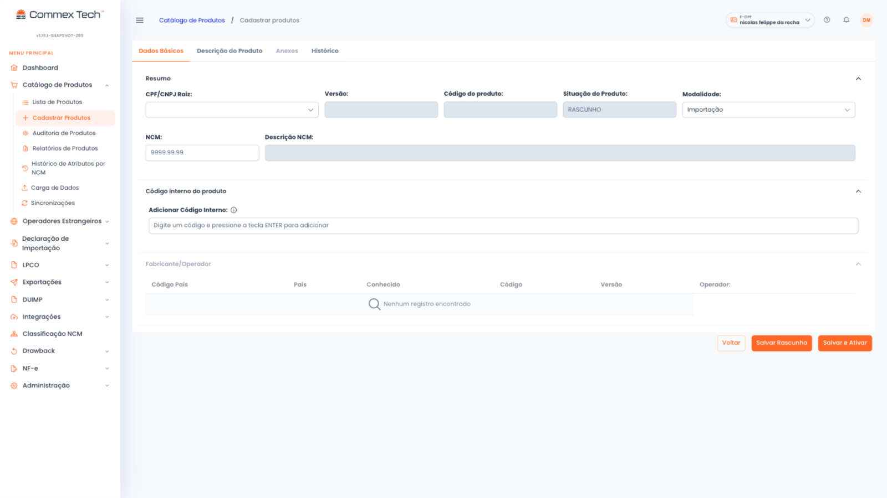

Atributos por NCM preenchidos e validados antes do envio
O Portal Único só acusa o atributo errado depois que o registro entra, muitas vezes com a carga já em desembaraço. O módulo de Cadastro de Produtos levanta o que cada NCM exige, preenche com os dados que o produto já tem e valida tudo antes do envio.
É a base da plataforma Commex Tech: cadastro de produtos em massa, com IA e trilha de auditoria por SKU.
Cada NCM exige um conjunto próprio de atributos.
A lista muda conforme a classificação, e o Portal Único só confere na hora do registro. Quem preenche à mão descobre a inconsistência tarde, já com carga retida.
Preenchimento por tentativa e erro
O conjunto de atributos exigido muda conforme a classificação. Sem essa lista levantada por produto, o analista testa o preenchimento direto no Siscomex e conserta um retorno de erro por vez.
Horas de analista e correção tardia
Preencher SKU a SKU consome horas de analista, e o campo errado só aparece no desembaraço. Corrigir nessa fase custa mais do que corrigir no cadastro.
Cópias paralelas do catálogo
Cada analista guarda um arquivo, e cada arquivo diverge um pouco. Não existe fonte única para confirmar qual informação vale e de onde ela veio.
Levantamento, preenchimento, validação e histórico
O cadastro ganha um fluxo próprio dentro da plataforma. Cada alteração tem responsável identificado e fica gravada no histórico do produto, do primeiro dado ao envio.
Identificação automática dos atributos
A partir da NCM de cada produto, o módulo levanta o conjunto exato de atributos que o Portal Único exige. Ninguém precisa consultar tabela item a item.
Preenchimento a partir dos dados do produto
Descrição, ficha técnica e dados vindos do ERP alimentam os atributos. Seu time para de redigitar informação que já existe no sistema.
Validação pré-envio
O módulo aponta atributo faltante ou inconsistente antes do registro no Portal Único. O analista corrige na própria tela, sem processo aberto e sem carga envolvida.
Histórico e versões por produto
Toda alteração entra no histórico do produto, com autor e data. Existe sempre uma versão vigente, e as versões anteriores permanecem disponíveis para auditoria.
A tela de atributos do produto.
Na aba de Descrição do Produto, o módulo reúne a denominação, a descrição e os atributos que a NCM exige. Cada campo é preenchido e validado antes do envio ao Portal Único.

Tela real do módulo: os atributos exigidos pela NCM, preenchidos e prontos para validação.
Governança por SKU em escala.
A XCMG Brasil mantém 100 mil produtos classificados na plataforma, com o mesmo controle por item.
- Erro de atributo resolvido antes do registro no Portal Único, ainda na fase de cadastro.
- Histórico e versão vigente por produto, com a base legal de cada preenchimento registrada.
- Rastreabilidade auditável por SKU, pronta para responder a questionamento fiscal.
- Dados do produto vindos direto do ERP: SAP, TOTVS, Oracle, OSGT e sistemas próprios.
O módulo na rotina de um cliente.
“A ferramenta da Commex Tech trouxe muito mais agilidade para nossa rotina. Antes, o cadastro de produtos exigia diversas conferências manuais e acompanhamento em diferentes planilhas. Hoje, conseguimos centralizar as informações, acompanhar o status dos processos e reduzir significativamente o tempo gasto em cada cadastro.”
Antes de falar com um especialista
Meu catálogo está bagunçado. Dá para começar mesmo assim?
Esse é o cenário mais comum. O ponto de partida é a NCM de cada produto: com ela, o módulo identifica os atributos exigidos, mostra o que os dados existentes já cobrem e lista o que falta. As pendências saem por lote, começando pelos SKUs com embarque previsto. Ninguém precisa entregar o catálogo inteiro arrumado antes de operar.
Preciso migrar tudo de uma vez?
Não. Dá para começar pelos itens ativos ou pelas famílias de produto com mais movimentação e ampliar depois. Cada produto validado ganha histórico e versão próprios, então o que já foi tratado permanece intacto quando o restante do catálogo entrar.
O módulo funciona junto com a Classificação Fiscal NCM?
Funcionam bem juntos. O Cadastro de Produtos é a base da plataforma; a Classificação Fiscal NCM é um módulo adicional. A NCM define quais atributos o Portal Único exige, então, quando a classificação também acontece na Commex Tech, o cadastro já parte de uma NCM com score de confiança e base legal registrada.
Módulos relacionados
Classificação Fiscal NCM
A NCM define quais atributos o Portal Único exige. A sugestão sai em 5 minutos, com base legal registrada.
Ver módulo →DUIMP
A DUIMP utiliza o catálogo validado neste módulo. Os atributos chegam preenchidos ao novo processo de importação.
Ver módulo →Integrações ERP
API REST, SFTP e OAuth para SAP, TOTVS, Oracle, OSGT e sistemas próprios. Os dados chegam prontos do sistema onde o produto já está cadastrado.
Ver módulo →Valide o catálogo antes que o Portal Único faça isso por você
Diga quantos SKUs ativos a operação tem e qual ERP utiliza, se houver. Um especialista mostra onde o módulo de Cadastro de Produtos entra no seu processo.
Suporte em dias úteis, 8h–18h · Treinamento inicial incluso · SLA contratual de 99,5%